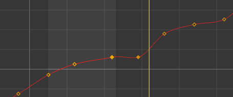
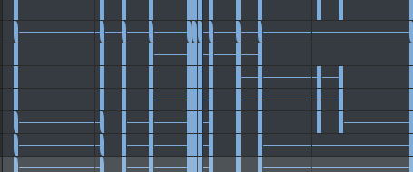
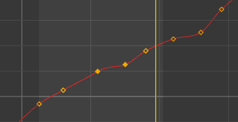
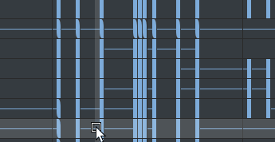

在“曲线图编辑器”(Graph Editor)和“摄影表编辑器”(Dope Sheet Editor)中，使用“缩放关键帧工具”(Scale Keys Tool)可在图表视图中缩放动画曲线分段的区域和关键帧的位置。
- 曲线图编辑器(Graph Editor)：“曲线图编辑器”(Graph Editor)的“编辑”(Edit)菜单 >“变换工具”(Transformation Tools) >“缩放关键帧工具”(Scale Keys Tool) >

- 摄影表编辑器(Dope Sheet Editor)：双击“摄影表”(Dope Sheet)工具栏上的“缩放关键帧”(Scale key) ，或双击“摄影表”(Dope Sheet)的“编辑”(Edit)菜单 >“变换工具”(Transformation Tools) >“缩放关键帧工具”(Scale Keys Tool) >
打开“缩放关键帧设置”(Scale Key Settings)
注： 在曲线图编辑器(Graph Editor)和“摄影表编辑器”(Dope Sheet Editor)的“编辑”(Edit)菜单中，还有一个“缩放”(Scale)工具，该工具包含以下选项：缩放关键帧选项(Scale Keys options)。
注： 可以使用“动画”(Animation)首选项（在“设置”(Settings)下）的“曲线图编辑器”(Graph Editor)区域中的“关键帧大小”(Key Size)选项，更改“曲线图编辑器”(Graph Editor)图表视图中显示的关键帧的大小。
在“缩放工具设置”(Scale Tool Settings)窗口中，可以选择两种方法在图表视图中缩放关键帧。
- 类型(Type)
-
设置下列选项之一：
- 操纵器(Manipulator)
-

使用“操纵器”(Manipulator)缩放“曲线图编辑器”(Graph Editor)关键帧
使用“操纵器”(Manipulator)缩放“摄影表编辑器”(Dope Sheet Editor)关键帧
- 可用于通过操纵器框样式来缩放关键帧。
- 拖动并选择关键帧，然后单击并拖动操纵器框的一角。
注： 仅曲线图编辑器：操纵器框显示百分比，以精确衡量对选定关键帧的影响程度。也可以双击值以输入自定义值。
- 光标为中心(Gestural)
-

使用“光标为中心”(Gestural)类型缩放“曲线图编辑器”(Graph Editor)关键帧
使用“光标为中心”(Gestural)类型缩放“摄影表编辑器”(Dope Sheet Editor)关键帧
- 更改关键帧在图表视图中缩放的方式，使鼠标位置（而不是缩放框）可确定缩放向量。
- 在图表视图/视图区域中单击鼠标中键并向左或向右拖动。
- 仅缩放选定关键帧(Only scale selected keys)
-
启用该选项后，“缩放关键帧工具”(Scale Keys Tool)仅影响选定的关键帧。禁用此选项后，“缩放关键帧工具”(Scale Keys Tool)影响所有关键帧。注： 禁用“仅缩放选定关键帧”(Only scale selected keys)选项后，会以涟漪模式缩放关键帧。
也可以选择“编辑 > 变换工具 > 缩放关键帧”(Edit > Transformation Tools > Scale Keys) >
以打开“缩放关键帧工具”(Scale Key Tool)选项窗口。请参见缩放关键帧选项(Scale Key Options)。